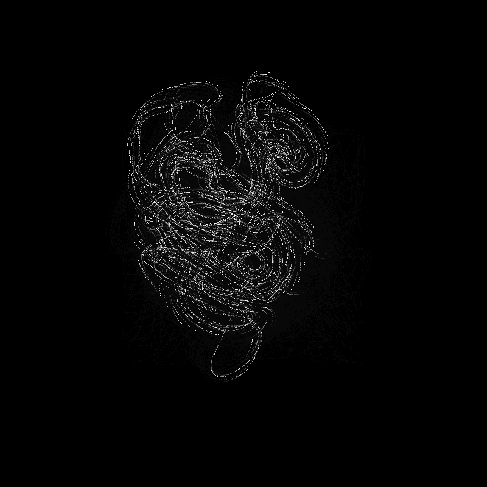
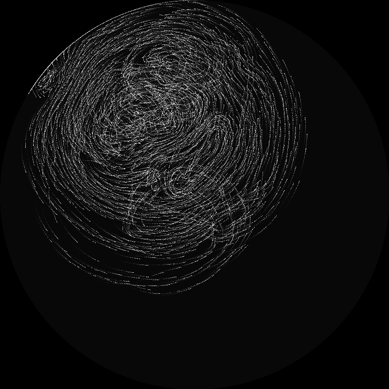
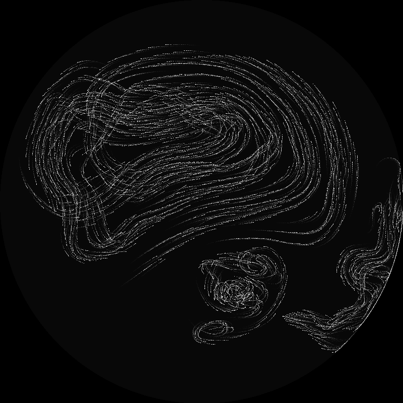

Chain Flocking
Overview
This is just a small project to play around with different kinds of emergent behavior that can arize from flocking algorithms. The chain flocking algorithm I came up with is a modified version of the boids algorithm but where each boid is attracted to a single other boid in the flock. This leads to "chains" of boids forming each one following in a line after the one in front of it. Admittedly this doesn't have many practical uses and mostly just exists as an interesting experiment.
Inspiration
This was heavily inspired by the boids algorithm. I had already made a few different variations of the boids algorithm in the past and so I wanted to try something new to see how difficult it would be to create cohesive flocking behaviour from simple rules. This project exists almost completely just as a test to allow me to get a better feel for flocking algorithms.
Results
Below are a few examples of the flocking algorithm running.
  